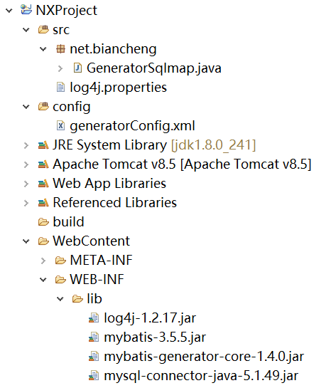
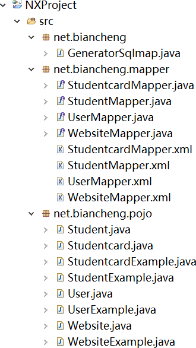

MyBatis逆向工程
Mybatis 提供了一个逆向工程工具，该工具可以根据数据表自动生成针对单表的 po 类、mapper 映射文件和 mapper 接口。大大缩减了开发时间，可以让开发人员将更多的精力放在繁杂的业务逻辑上。
之所以强调单表两个字，是因为 MyBatis 逆向工程生成的 Mapper 中的操作都是针对单表的。在大型项目中，很少有复杂的多表关联查询，所以该工具作用还是很大的。
maven 项目在 pom.xml 文件中添加以下代码。
新建资源文件夹 config，在 config 文件夹下创建 genertorConfig.xml 文件，用于配置及指定数据库及表等。
创建 GeneratorSqlmap 类执行生成代码。
执行 GeneratorSqlmap 后刷新项目，项目结构如下。
可以看到在 pojo 包中，有一部分是名字为 XxxExample 的类。类中包含以下 3 个成员变量，如下。
更多信息可参考《MyBatis逆向工程使用手册》。
之所以强调单表两个字，是因为 MyBatis 逆向工程生成的 Mapper 中的操作都是针对单表的。在大型项目中，很少有复杂的多表关联查询，所以该工具作用还是很大的。
1. 下载jar包
jar包下载链接：https://github.com/mybatis/generator/releases。本节下载版本为 mybatis-generator-core-1.4.0。maven 项目在 pom.xml 文件中添加以下代码。
<dependency>
<groupId>org.mybatis.generator</groupId>
<artifactId>mybatis-generator-core</artifactId>
<version>1.4.0</version>
</dependency>
2. 创建数据表
创建 user、student、studentCard 和 website 数据表，SQL 语句如下。DROP TABLE IF EXISTS `student`; CREATE TABLE `student` ( `id` int(11) NOT NULL AUTO_INCREMENT, `name` varchar(20) CHARACTER SET utf8 COLLATE utf8_unicode_ci DEFAULT NULL, `sex` tinyint(4) DEFAULT NULL, `cardId` int(20) DEFAULT NULL, PRIMARY KEY (`id`), KEY `cardId` (`cardId`), CONSTRAINT `student_ibfk_1` FOREIGN KEY (`cardId`) REFERENCES `studentcard` (`id`) ) ENGINE=InnoDB AUTO_INCREMENT=7 DEFAULT CHARSET=utf8; DROP TABLE IF EXISTS `studentcard`; CREATE TABLE `studentcard` ( `id` int(20) NOT NULL AUTO_INCREMENT, `studentId` int(20) DEFAULT NULL, `startDate` date DEFAULT NULL, `endDate` date DEFAULT NULL, PRIMARY KEY (`id`), KEY `studentId` (`studentId`) ) ENGINE=InnoDB AUTO_INCREMENT=6 DEFAULT CHARSET=utf8; DROP TABLE IF EXISTS `user`; CREATE TABLE `user` ( `id` int(11) NOT NULL AUTO_INCREMENT, `name` varchar(20) DEFAULT NULL, `pwd` varchar(20) DEFAULT NULL, PRIMARY KEY (`id`) ) ENGINE=InnoDB AUTO_INCREMENT=7 DEFAULT CHARSET=utf8; DROP TABLE IF EXISTS `website`; CREATE TABLE `website` ( `id` int(11) NOT NULL AUTO_INCREMENT, `name` varchar(20) COLLATE utf8_unicode_ci NOT NULL, `url` varchar(30) COLLATE utf8_unicode_ci DEFAULT '', `age` tinyint(3) unsigned NOT NULL, `country` char(3) COLLATE utf8_unicode_ci NOT NULL DEFAULT '', `createtime` timestamp NULL DEFAULT CURRENT_TIMESTAMP, PRIMARY KEY (`id`) ) ENGINE=InnoDB AUTO_INCREMENT=9 DEFAULT CHARSET=utf8 COLLATE=utf8_unicode_ci;
3. 创建项目
创建 NXProject 项目，导入所需 jar 包。新建资源文件夹 config，在 config 文件夹下创建 genertorConfig.xml 文件，用于配置及指定数据库及表等。
genertorConfig.xml 配置文件代码如下。注意：可以在已有的项目中进行逆向生成，也可以创建一个新项目。建议创建新项目，避免出现意外影响已有的项目。
<?xml version="1.0" encoding="UTF-8"?>
<!DOCTYPE generatorConfiguration PUBLIC "-//mybatis.org//DTD MyBatis Generator Configuration 1.0//EN" "http://mybatis.org/dtd/mybatis-generator-config_1_0.dtd">
<generatorConfiguration>
<context id="DB2Tables" targetRuntime="MyBatis3">
<commentGenerator>
<!-- 是否去除自动生成的注释 -->
<property name="suppressAllComments" value="true" />
</commentGenerator>
<!-- Mysql数据库连接的信息：驱动类、连接地址、用户名、密码 -->
<jdbcConnection driverClass="com.mysql.jdbc.Driver"
connectionURL="jdbc:mysql://localhost:3306/test" userId="root"
password="root" />
<!-- 默认为false，把JDBC DECIMAL 和NUMERIC类型解析为Integer，为true时 把JDBC DECIMAL 和NUMERIC类型解析为java.math.BigDecimal -->
<javaTypeResolver>
<property name="forceBigDecimals" value="false" />
</javaTypeResolver>
<!-- targetProject：生成POJO类的位置 -->
<javaModelGenerator
targetPackage="net.biancheng.pojo" targetProject=".\src">
<!-- enableSubPackages:是否让schema作为包的后缀 -->
<property name="enableSubPackages" value="false" />
<!-- 从数据库返回的值被清理前后的空格 -->
<property name="trimStrings" value="true" />
</javaModelGenerator>
<!-- targetProject：mapper映射文件生成的位置 -->
<sqlMapGenerator targetPackage="net.biancheng.mapper"
targetProject=".\src">
<!-- enableSubPackages:是否让schema作为包的后缀 -->
<property name="enableSubPackages" value="false" />
</sqlMapGenerator>
<!-- targetProject：mapper接口生成的的位置 -->
<javaClientGenerator type="XMLMAPPER"
targetPackage="net.biancheng.mapper" targetProject=".\src">
<!-- enableSubPackages:是否让schema作为包的后缀 -->
<property name="enableSubPackages" value="false" />
</javaClientGenerator>
<!-- 指定数据表 -->
<table tableName="website"></table>
<table tableName="student"></table>
<table tableName="studentcard"></table>
<table tableName="user"></table>
</context>
</generatorConfiguration>
创建 GeneratorSqlmap 类执行生成代码。
package net.biancheng;
import java.io.File;
import java.util.*;
import org.mybatis.generator.api.MyBatisGenerator;
import org.mybatis.generator.config.Configuration;
import org.mybatis.generator.config.xml.ConfigurationParser;
import org.mybatis.generator.internal.DefaultShellCallback;
public class GeneratorSqlmap {
public void generator() throws Exception {
List<String> warnings = new ArrayList<String>();
boolean overwrite = true;
// 指定配置文件
File configFile = new File("./config/generatorConfig.xml");
ConfigurationParser cp = new ConfigurationParser(warnings);
Configuration config = cp.parseConfiguration(configFile);
DefaultShellCallback callback = new DefaultShellCallback(overwrite);
MyBatisGenerator myBatisGenerator = new MyBatisGenerator(config, callback, warnings);
myBatisGenerator.generate(null);
}
// 执行main方法以生成代码
public static void main(String[] args) {
try {
GeneratorSqlmap generatorSqlmap = new GeneratorSqlmap();
generatorSqlmap.generator();
} catch (Exception e) {
e.printStackTrace();
}
}
}
项目结构如下图所示。

执行 GeneratorSqlmap 后刷新项目，项目结构如下。

可以看到在 pojo 包中，有一部分是名字为 XxxExample 的类。类中包含以下 3 个成员变量，如下。
protected String orderByClause; protected boolean distinct; protected List<Criteria> oredCriteria;以上变量说明如下：
- distinct 字段用于指定 DISTINCT 查询。
- orderByClause 字段用于指定 ORDER BY 条件，这个条件没有构造方法，直接通过传递字符串值指定。
- oredCriteria 字段用于自定义查询条件。
更多信息可参考《MyBatis逆向工程使用手册》。
关注公众号「站长严长生」，在手机上阅读所有教程，随时随地都能学习。内含一款搜索神器，免费下载全网书籍和视频。

微信扫码关注公众号